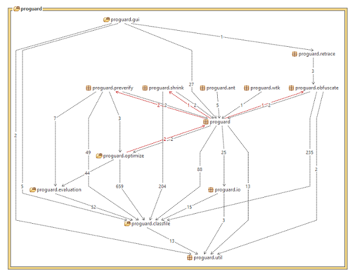

Introduzione

Lo step finale di preverifica aggiunge informazioni richieste dalla J2ME e migliorando il tempo di inizializzazione del sistema per Java 6.
Architettura SW
La gestione del nuovo componente di preverifica del codice e di ulteriori ottimizzazioni ha introdotto significativi mutamenti del modello architetturale. In particolar modo i componenti del livello Function si ritrovano a poter comunicare con il livello superiore, violando così il pattern architetturale. In Fig. 4.1 vengono mostrate le dipendenze tra i vari livelli dell'architettura.

Preverivica del codice
Durante il caricamento dei file .class il class loader esegue sofisticate verifiche del bytecode. Questa analisi assicura che il codice non oltrepassi, accidentalmente o intenzionalmente, la sandbox della virtual machine. Il nuovo componente ha il compito di semplificare la fase di verifica effettuata dal previrificatore J2ME e dal compilatore Java 6. In questo modo i file .class vengono caricati in maniera più veloce ed efficiente in memoria.
In Fig. 4.2 e 4.3 vengono mostrate, rispettivamente, le classi che assolvono l'attività di preverifica e le dipendenze con gli altri componenti del sistema.

Fig. 4.2 - Class diagram del componente proguard.preferify.

Fig. 4.3 - Dipendenze del componente proguard.preferify.